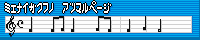

現在位置： ホーム -> 更新履歴 - パソコン部関連 推薦ページ 灘校関連 部員・OBのサイト
リンクに関してはリンクについてを参照願います。
 武蔵中学・高校CPU愛好会
武蔵中学・高校CPU愛好会
信号処理関連の論文翻訳を試みられています。相互リンクしています。
管理者が引き継がれたようで、今後の発展に期待しています。
 ラ・サール学園パソコン部
ラ・サール学園パソコン部
部員作品のダウンロードができます。更新も盛んです。相互リンクしています。
HTMLの文法をオンラインでチェックしてくれるサイト。このページはここに準拠しています。
HTMLの文法を解説しています。猫でもと違って鳩ではわからないようです。
超初心者対象のプログラム教室です
ということで、C言語をWindowsやMS-DOSを中心に初歩から上級まで幅広く解説されています。
主にC/C++でのWindowsプログラミングのサイトなのですが、DIB・グラフィック処理
やWave音源と信号処理
といった分野についても解説されています。
C/C++/C#/D/Java/Perl/アセンブリといったプログラミング言語やDirectX/OpenGLといったシステム、Win32API/Microsoft.NETといったAPIなどについて解説されています。
灘校の公式サイトです。入学案内などはこちらへどうぞ。
灘校生徒会の公式サイトです。最近の行事関連などはこちらへどうぞ。
ページデザインが美しいですよ。相互リンクしています。
部誌も公開されていますよ。相互リンクしています。
 OKAZI?42
OKAZI?42
灘校生徒会誌「NADA42」に掲載された大作「OKAZI?42」。
会誌ではその一部しか掲載できなかったが、今その全貌が明らかに…
 虚構階層
虚構階層
我が部のOB、EER the werecat氏の個人サイトです。
我が部のOB、Fumbler氏の個人サイトです。
 見えない楽譜の集まるページ
我が部のOB、59回生ノーベル氏の個人サイトです。
 FeyFay Laboratory
FeyFay Laboratory
我が部のOB、59回生フェイ氏の個人サイトです。
 Team CRD Web Page
Team CRD Web Page
部員のまいん(結成当時ボンビー)が結成したコンピューター関連の活動を行うチームのサイトです。
現在位置： ホーム -> 更新履歴 - サイトの歩みなど 活動理念 - 趣旨、目標、近況などなど 部員作品 - 部員が製作した作品の展示 技術解説 - 使用した技術の紹介 部誌公開 - 文化祭で発行した部誌の展示 内部事情 - 主に管理者の日記 御意見板 - ご意見、ご感想などはこちらへ(現在開設予定なし) 恋文投函 - 部にメールを送信 [社会之窓] 部員専用 - 部員専用のスペースです© Copyright 2006 npca & FeyFay Laboratory. All rights reserved.